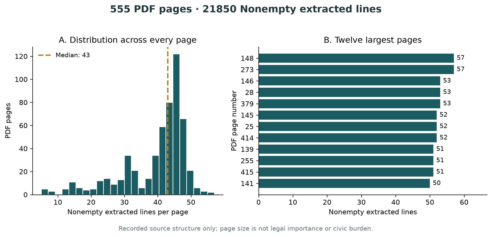
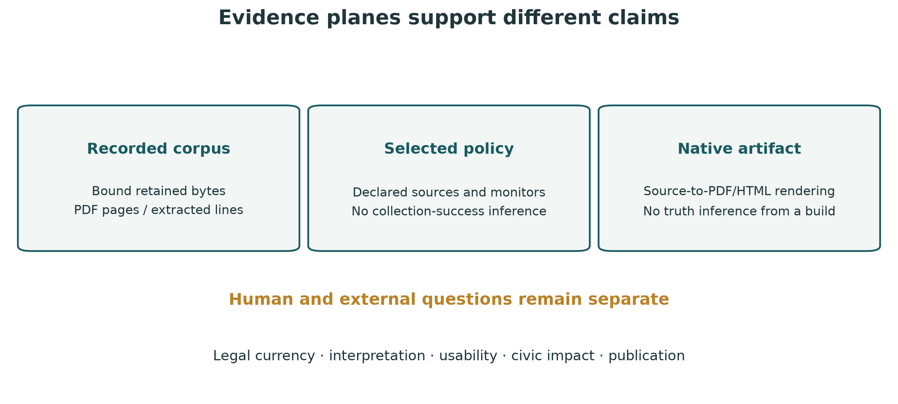

2 Abstract
Regional civic software must travel without carrying another city’s facts or eligibility assumptions. This study implements Reno, Nevada as a thin consumer of shared regional methods, with local ownership of source selection, geographic policy, retained evidence and manuscript prose. The case exposes a provider boundary: Reno’s Municode collections were not retrievable in initial public access probes, while the City’s official Title 18 PDF was accessible. We therefore preserve a separately identified document edition rather than inventing a municipal-code scraper identity.
The retained edition contains 555 physical PDF pages and 21850 nonempty extracted lines. Every physical page, including front matter and any empty pages, contributes to the denominator. The public deployment declares 23 sources and enables 5 national-provider monitors with Reno-specific parameters. These are configuration counts, not successful-collection counts. Reproduction rehashes the original PDF and replays page extraction before deriving the full descriptive profile, search index and manuscript evidence. Native PDF and offline HTML use the actual pinned docxology/template API. The contribution is an inspectable composition and publication method; it does not establish complete legal coverage, current law, hazard absence, model factuality or civic benefit.
3 Introduction
3.1 A regional system must preserve its evidence boundary
A region is more than a label on a dashboard. Its jurisdiction, source publisher, document editions, forecast zones and public-service providers determine which operations are meaningful. Reusing software from Crescent City or Davis is appropriate; reusing their municipal corpus, coastal alerts or California-specific eligibility as Reno evidence is not. A thin consumer needs enough local ownership to make these differences explicit while leaving acquisition, validation, search, figures and rendering in one shared implementation.
Reno provides a useful engineering case because its publicly linked code system differs from the eCode360 provider used by the earlier consumers. The City Attorney’s guidance identifies the Clerk’s role in publishing the municipal code (City of Reno 2026b). This project follows the City’s source identity but does not infer that one access mechanism works because another does. Initial access errors for the two Municode collections are recorded as an availability boundary. The official Title 18 PDF supplies an accessible, explicitly bounded document edition (City of Reno 2026a). The study asks whether this edition can be acquired, inspected, searched and published without claiming that it is the whole Reno municipal code.
3.2 Relation to data and reproducibility scholarship
PROV-DM separates data entities, producing activities and responsible agents (World Wide Web Consortium 2013). Here, the PDF is an entity, extraction is an activity and local source ownership remains distinct from shared software ownership. The receipts implement those distinctions pragmatically; they are not a complete PROV serialization or a conformance claim.
W3C guidance treats provenance, quality information, versioning and preservation as publication concerns (World Wide Web Consortium 2017). The design retains both the publisher’s stated edition and the acquisition time, so later rendering cannot silently advance the source clock. It also distinguishes HTTP reachability from semantic acceptance: a successful response does not prove complete or current content.
The FAIR principles motivate discoverability, interpretable metadata and reusable identifiers (Wilkinson et al. 2016). The project publishes source identities and machine-readable commitments but does not claim a formal FAIR assessment. Dataset documentation provides another useful discipline: intended use, composition and collection conditions should travel with data (Gebru et al. 2021). Data statements additionally emphasize the limits of transferring language data between contexts (Bender and Friedman 2018). This municipal administrative text is neither a representative sample of residents nor evidence of their preferences.
The reported contribution has three parts: a provider-independent document plane in region-intel; an independent Reno deployment that composes that plane with national monitors; and a complete template-rendered review packet whose counts and figures derive from retained bytes. No social, causal or model-performance result is asserted.
4 Methods
4.1 Ownership and configuration
The Reno repository contains configuration, public source evidence, manuscript sources, acceptance tests, workflows and a small importer. Shared methods are imported from the full commit eed4cdb9e814a6cfc12ecb961611996378672bbf. The deployment identity is reno-nv. Its geographic anchor and rectangular watch extent are engineering parameters around Reno; they are not surveyed city boundaries. Washoe County FIPS 32031 selects county-level drought observations, which must not be described as a city-only measurement. The NWS policy uses public forecast zone NVZ003, whose coverage includes areas beyond Reno.
The enabled roster consists of earthquake, weather, air quality, drought and smoke. Declaring a monitor permits execution; it does not certify its response. The required compatibility policy document also contains fields for disabled adapters. Those fields confer no runtime eligibility. California wildfire, road, utility and fuel adapters are not enabled for Reno. Nevada 511, City road closures, flood management, emergency management and public-health links remain separate source-catalog entries where no corresponding verified local adapter is selected.
4.2 PDF acquisition and replay
The document descriptor binds a stable document ID to an exact configured source ID and URL, a human-readable title, the stated edition and rights information. The captured PDF is limited to 16 MB, the collection to 64 MB, and extraction to 10,000 physical pages per document. Live acquisition uses a bounded public HTTPS transport and preserves HTTP failures. In this deployment the shared HTTP client returned 403 for the City PDF, while a separate bounded, unauthenticated curl capture succeeded. We therefore use an explicit recorded-capture import. Its source ID, URL, original retrieval time, declared transport, status and PDF hash must match the deployment and admitted bytes. The transport declaration is operator-recorded provenance backed by the actual command evidence; the import is not a retrospective live-adapter pass. Poppler pdftotext runs with layout preservation and explicit UTF-8 output. Its terminal form-feed boundary defines physical pages; page numbers are one-based and include the cover and contents.
For every page the receipt retains text, its SHA-256 and the number of nonempty extracted lines. It also retains the PDF hash, byte size, acquisition timestamp and extractor version. A complete collection is promoted transactionally; a failed acquisition preserves the previous accepted collection and leaves diagnostic staging. On replay, the original PDF is rehashed and extracted again. Exact page membership and text must agree. Edited extracted text does not pass merely because its own hash was recomputed.
Line counts are properties of a particular extraction and layout. They do not identify legal provisions. Images, multi-column material, tables, symbols and reading order may not survive text extraction faithfully. Search returns matching physical pages and links to the exact retained PDF page fragment, with the upstream location recorded separately. No section segmentation, OCR, statutory interpretation or completeness test is inferred from this path.
4.3 Evidence transformation and native rendering

The shared renderer derives numerical variables, a full page-level CSV, descriptive statistics and publication figures from captured inputs. It fingerprints the deployment, policy, source bytes, lockfile, prose, cover and renderer implementation. Claim-ledger evidence must name captured public files. Native rendering calls the pinned template’s RenderManager for combined PDF and web output, retains its provenance and offline assets, and validates exact member bytes before packaging. Pages consumes the same validated packet. A renderer pass is technical evidence and does not supply independent scientific approval.
5 Results
5.1 Retained document edition
The source identifier is reno-title18. The retained PDF’s cover states that the code was effective January 8, 2025 and amended June 3, 2026 (City of Reno 2026a). Acquisition was recorded at 2026-11-01T23:40:30.028Z. The receipt identifier is:
f687a3da4cad5ef36df9d242d53dc400570e93f675f907ac3391ff25c20e961aThe extraction contains 555 physical PDF pages and 21850 nonempty extracted lines. These replace neither legal article counts nor section counts. The PDF viewer’s physical page index includes front matter; the source’s printed page labels can therefore differ. The descriptive profile spans every physical page. Its minimum is 5, median 43, maximum 57 nonempty lines, with 0 pages having no nonempty extracted lines. No pages are dropped to improve the distribution.

The complete all-page CSV accompanies this figure. A page with many extracted lines may contain dense text, tabular content or formatting artifacts. A sparse page may contain an image or a chapter boundary. Neither condition identifies substantive importance. The descriptive statistics summarize this single retained edition and extraction procedure; they do not support a population confidence interval or a temporal trend.
5.2 Composition and source availability
The source catalog contains 23 explicitly selected entries. The monitor roster contains 5 enabled adapters. Source reachability receipts, when retained, report each check’s original clock and HTTP result. They do not turn a reachable landing page into a parsed operational feed. Initial public probes of the Municode administrative and land-development collections returned access errors. The shared HTTP client also returned 403 for Title 18; its retained bytes came from an explicit import of the separately recorded bounded curl capture. The Title 18 document is therefore published as a separate document collection, with no eCode360 identity and no claim of full municipal-code capture.
The live dashboard, retained observations and native manuscript are distinct artifacts. Rebuilding the static site can reproduce the document search and review packet without a new network acquisition. A separately run collection may discover later observations, including unavailable states; it does not revise this manuscript’s retained document clock until a deliberate new evidence build occurs.
6 Discussion
6.1 Composability requires typed limits
The useful generalization is a shared method that preserves source-specific meaning. A PDF collection and a structured eCode360 corpus have different units and different validation opportunities. Treating one as the other would produce superficially uniform counts while obscuring a scientific limitation. This implementation instead shares bounded transport, filesystem custody, transaction semantics, publication correspondence and native rendering while making document units explicit.
This distinction also clarifies thin orchestration. Reno owns the source selection and policy; it does not copy a scraper or a renderer. Provider support evolves in the core, while a full immutable dependency pin lets an existing consumer retain an already qualified behavior. The manuscript and static site are projections of retained local inputs rather than independently edited summaries. This reduces one class of disagreement between prose, figures and public downloads. It does not remove the need to inspect legal sources or assess interface usefulness.
Reproducible computational research emphasizes preserving the information required to recover results (Sandve et al. 2013). For this case, the important recovery target is the descriptive extraction and its publication artifacts. Native tool versions, original PDF bytes, source clocks and the full page denominator matter more than a generic success badge. A machine that lacks Poppler or the pinned template must fail with a visible prerequisite rather than substitute a different rendering or extraction method silently.
6.2 Absence and operational interpretation
A source-catalog entry is an invitation to inspect an authoritative source, not evidence that its entire archive was parsed. A meeting portal may load a JavaScript application while yielding no static agenda links. An air-quality station may be unavailable or too distant for a selected radius. A drought observation is county-level and has its own publication cadence. None of these states establishes that a service is quiet or a hazard absent.
The implementation supports human checking by preserving unavailable states and linking to original publishers. It does not promise emergency delivery, exhaustive local reporting or legal advice. Future usability studies should observe whether readers understand the difference between a retained edition, a reachable source and a live monitor result. Such studies require a protocol, participant protections and their own evidence; no reader outcome is supplied here.
7 Limitations, Ethics, and Threats to Validity
7.1 Data statement
The document plane contains one official Reno Title 18 PDF edition, including its front matter, tables and illustrations. The administrative code, later ordinances, other titles, archived editions and county regulations are not implied members. Washoe County is a separate jurisdiction even where it provides regional services. The source catalog is a curated engineering selection, not a complete census of public information.
The acquisition records technical provenance, not legal authority. A publisher may update a file at the same URL, and later amendments may exist elsewhere. The stated cover date is reported as such. It is not a statement that the retained text includes every amendment as of acquisition. A preflight qpdf check of the publisher PDF returned a stream warning (exit 3); the original bytes are preserved without repair. Exact extraction replay does not resolve that warning or verify every source illustration. Text extraction also does not reproduce visual reading order perfectly. Users should consult the original PDF and responsible public offices for legal decisions.
7.2 Rights, privacy and automated assistance
The project preserves attribution and source identity. Its repository license covers original project contributions and does not grant rights over third-party illustrations, marks, linked websites or incorporated material. The cover is original generated conceptual artwork, credited separately and not presented as a map or photograph. Analytical figures are deterministic transformations of retained page counts. No resident-level profile, private record, hidden identifier or access-control bypass is part of this study.
NIST’s AI risk framework treats evaluation and context as ongoing responsibilities (National Institute of Standards and Technology 2023). This study supplies no empirical model-answer evaluation and no NIST certification. Shared language-model features, if later configured, need their own retrieval, citation and factuality qualification. The public static search is lexical page search, not a generative answer. A valid hash cannot establish truth, fairness, legal correctness or an acceptable social use.
7.3 Preparation and responsibility
Software and manuscript preparation used AI assistance, including the separately credited conceptual cover. The named author must review scientific, legal and publication claims before a formal release. Automated checks and independent technical artifact review do not supply domain-expert approval.
7.4 Unestablished outcomes
No civic benefit, hazard reduction, regulatory burden, legal completeness, accessibility certification, legal interpretation or formal release approval is established. Rendered-output inspection checks visible artifacts within a stated environment. It does not establish PDF/UA conformance or replace review by domain experts. The packet is a review draft intended to make further review possible.
8 Reproducibility and Artifact Specification
8.1 Frozen public inputs
The input commitment is:
40297038beeb47cfed581606a4ba88beb3e9a707ac27fc2a10ee4519f95a7769The shared core pin is eed4cdb9e814a6cfc12ecb961611996378672bbf. The external template pin is c18dae54a07fe6ac3a7b1a1a274251c169a12e7a. The complete packet retains projected prose, bibliography, claim ledger, source commitments, page-level profile, CSV, three analytical figures in PNG/PDF/SVG, native PDF, extracted text and offline HTML assets. Reproducing source-derived counts requires the public retained PDF and the recorded extraction contract. Acquisition is a separate network operation; it should not be silently repeated during an offline acceptance build.
bun install --frozen-lockfile
bun run validate
bun run documents:check
bun run manuscript:check
bun run manuscript:validate-render -- --bundle
bun run publication:check
bun run pages:export
bun run pages:validate -- .pagesTo create a new native edition, configure the actual pinned template checkout and its frozen rendering environment, install the documented native tools, then run:
bun run manuscript:bundleThe REGION_TEMPLATE_ROOT and REGION_TEMPLATE_PYTHON environment variables select that external checkout and interpreter. There is no direct-Pandoc substitute when the pinned API is unavailable. A failed render retains staging and preserves the preceding complete packet.
8.2 New observations and version changes
bun run documents:acquire
bun run sources:check
bun run gov-meetings
bun run alerts
bun run observations:seedWhere a public source is unavailable to the shared client, preserve the failed acquisition. A separately recorded public capture can be admitted explicitly:
bun run documents:import -- --source output/document-captureThe import directory and strict capture.json schema are documented in the shared document methods. Never invent successful transport metadata or advance a captured source clock during import.
These commands make new observations and therefore change evidence. They are not equivalent to replaying the retained edition. Check source rights and profile policy before collection; inspect unavailable states afterward. A changed seed, configuration, lockfile, prose or renderer requires new input commitments and a new rendered packet. Exact Git publication checks compare the public working bytes against HEAD or the staged index; they neither stage files nor publish by themselves.
8.3 Validation scope
Meaningful negative controls alter the input that a check is supposed to protect: change original PDF bytes, rehash edited page text, remove a page, change a source URL, exchange a profile, add an unexpected published member or modify a tracked native asset. Such cases must fail. Broad core qualification, consumer acceptance, exact-byte Pages replay, hosted workflow results and visible artifact review remain separately reportable evidence. A failure in one lane is not erased by a pass in another.
9 Conclusion
Reno can be deployed as a thin regional consumer while preserving a meaningful provider boundary. The shared document method retains the official Title 18 PDF, replays all physical pages, derives a complete descriptive extraction profile and publishes search and native review artifacts from the same evidence. Local identity and selected national monitors remain explicit configuration. The design makes the accessible document useful without representing it as a complete current municipal code.
The resulting review packet supports technical inspection and further scholarly review. Continuing legal currency, interpretive validity, accessibility, model-answer quality and public usefulness require additional evidence. Future additions should enter through shared, tested methods and explicitly admitted local policy rather than copied implementations or inherited observations.
10 Appendix: Formal Contracts and Worked Records
Let a retained document consist of physical PDF pages \(P = (p_1,\ldots,p_n)\). For the selected extractor, let \(t_i\) be the exact UTF-8 text assigned to page \(i\), and let \(L_i\) count its nonempty extracted lines. The reported denominators are
\[N_{\mathrm{pages}} = n, \qquad N_{\mathrm{lines}} = \sum_{i=1}^{n} L_i.\]
The profile reports the minimum, median and maximum of the complete sequence \((L_1,\ldots,L_n)\), including zeros. These are extraction statistics. They do not define a legal segmentation or a probability sample. Changing page layout, fonts or extractor behavior can change the line-count distribution without changing the substantive law.
Replay acceptance requires the configured source identity, original PDF hash, physical page membership and exact extracted texts to agree with the retained receipt. Publication correspondence additionally requires the selected Git reference to contain the same public input and native packet bytes. Neither relation implies semantic truth or continuing legal currency.

The claim ledger records the scope and unestablished outcomes alongside each evidence locator. This is a practical traceability device rather than a formal proof of correctness. It makes disagreements locatable: an extraction mismatch, a source-identity change and a substantive legal objection should not be collapsed into one undifferentiated build result.